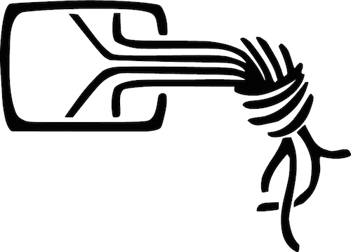

Über uns
Dem Chaos Computer Club e.V. nahe stehend, sind wir als Deutschlands nördlichster Chaostreff eine Gruppe Technik-interessierter mit Spaß am Gerät. Wir betreiben in der Flensburger Innenstadt einen Club-Raum (Hackerspace), in dem Mitglieder täglich ab 17:00 gemeinsam programmieren, löten und an diversen Projekten arbeiten. Zusätzlich finden regelmäßig Veranstaltungen statt, die jedem Menschen offenstehen und in denen wir der Allgemeinheit den Umgang mit neuer Technik nahe bringen. Jeder Mensch ist herzlich eingeladen vorbei zu kommen und sich innerhalb Projekte und bei Veranstaltungen umzusehen.
Unsere Satzung und Beitragsordnung findest unter Papierkram.
